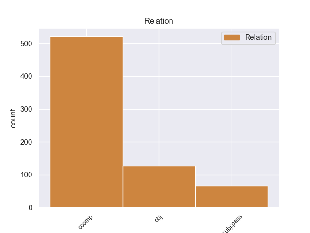
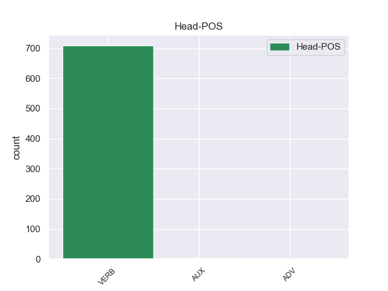
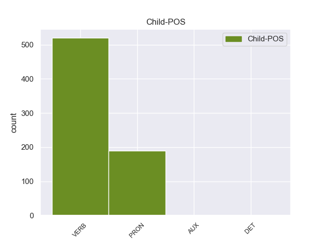

Distribution of features within this leaf



Agreement Rules sorted by frequency.
- When the dependent token is the clausal complement(ccomp) of the head token,
1 από _ _ _ _ 0 _ _ _
2 τα _ _ _ _ 0 _ _ _
3 δε _ _ _ _ 0 _ _ _
4 έγγραφα _ _ _ _ 0 _ _ _
5 της _ _ _ _ 0 _ _ _
6 υπόθεσης _ _ _ _ 0 _ _ _
7 προκύπτει προκύπτει VERB _ Aspect=Imp|Mood=Ind|Number=Sing|Person=3|Tense=Pres|VerbForm=Fin|Voice=Act 0 _ _ _
8 ότι _ _ _ _ 0 _ _ _
9 δεν _ _ _ _ 0 _ _ _
10 φαίνεται _ _ _ _ 0 _ _ _
11 να _ _ _ _ 0 _ _ _
12 έχει _ _ _ _ 0 _ _ _
13 ληφθεί ληφθεί VERB _ Aspect=Imp|Mood=Ind|Number=Sing|Person=3|Tense=Pres|VerbForm=Fin|Voice=Act 7 ccomp _ _
14 υπόψη _ _ _ _ 0 _ _ _
15 η _ _ _ _ 0 _ _ _
16 σύσταση _ _ _ _ 0 _ _ _
17 να _ _ _ _ 0 _ _ _
18 διαβιβαστεί _ _ _ _ 0 _ _ _
19 η _ _ _ _ 0 _ _ _
20 αίτηση _ _ _ _ 0 _ _ _
21 άρσης _ _ _ _ 0 _ _ _
22 της _ _ _ _ 0 _ _ _
23 ασυλίας _ _ _ _ 0 _ _ _
24 μόνον _ _ _ _ 0 _ _ _
25 επί _ _ _ _ 0 _ _ _
26 τη _ _ _ _ 0 _ _ _
27 βάσει _ _ _ _ 0 _ _ _
28 ακριβέστερου _ _ _ _ 0 _ _ _
29 προσδιορισμού _ _ _ _ 0 _ _ _
30 όσον _ _ _ _ 0 _ _ _
31 αφορά _ _ _ _ 0 _ _ _
32 τους _ _ _ _ 0 _ _ _
33 τόπους _ _ _ _ 0 _ _ _
34 και _ _ _ _ 0 _ _ _
35 τα _ _ _ _ 0 _ _ _
36 πρόσωπα _ _ _ _ 0 _ _ _
37 που _ _ _ _ 0 _ _ _
38 εμπλέκονται _ _ _ _ 0 _ _ _
39 σ _ _ _ _ 0 _ _ _
40 την _ _ _ _ 0 _ _ _
41 υπόθεση _ _ _ _ 0 _ _ _
42 . _ _ _ _ 0 _ _ _
1 Είναι _ _ _ _ 0 _ _ _
2 σημαντικό _ _ _ _ 0 _ _ _
3 να _ _ _ _ 0 _ _ _
4 υπογραμμίσω _ _ _ _ 0 _ _ _
5 το _ _ _ _ 0 _ _ _
6 γεγονός _ _ _ _ 0 _ _ _
7 ότι _ _ _ _ 0 _ _ _
8 και _ _ _ _ 0 _ _ _
9 οι _ _ _ _ 0 _ _ _
10 δύο _ _ _ _ 0 _ _ _
11 βουλευτές _ _ _ _ 0 _ _ _
12 διατρανώνουν _ _ _ _ 0 _ _ _
13 σθεναρά _ _ _ _ 0 _ _ _
14 την _ _ _ _ 0 _ _ _
15 αθωότητά _ _ _ _ 0 _ _ _
16 τους _ _ _ _ 0 _ _ _
17 και _ _ _ _ 0 _ _ _
18 καταγγέλλουν καταγγέλλουν VERB _ Aspect=Imp|Mood=Ind|Number=Plur|Person=3|Tense=Pres|VerbForm=Fin|Voice=Act 0 _ _ _
19 αυτό αυτό PRON _ Case=Acc|Gender=Neut|Number=Sing|Person=3|PronType=Dem 18 obj _ _
20 που _ _ _ _ 0 _ _ _
21 οι _ _ _ _ 0 _ _ _
22 ίδιοι _ _ _ _ 0 _ _ _
23 θεωρούν _ _ _ _ 0 _ _ _
24 καταχρήσεις _ _ _ _ 0 _ _ _
25 σ _ _ _ _ 0 _ _ _
26 τη _ _ _ _ 0 _ _ _
27 διαδικασία _ _ _ _ 0 _ _ _
28 δίωξης _ _ _ _ 0 _ _ _
29 . _ _ _ _ 0 _ _ _
1 από _ _ _ _ 0 _ _ _
2 τα _ _ _ _ 0 _ _ _
3 δε _ _ _ _ 0 _ _ _
4 έγγραφα _ _ _ _ 0 _ _ _
5 της _ _ _ _ 0 _ _ _
6 υπόθεσης _ _ _ _ 0 _ _ _
7 προκύπτει _ _ _ _ 0 _ _ _
8 ότι _ _ _ _ 0 _ _ _
9 δεν _ _ _ _ 0 _ _ _
10 φαίνεται _ _ _ _ 0 _ _ _
11 να _ _ _ _ 0 _ _ _
12 έχει _ _ _ _ 0 _ _ _
13 ληφθεί _ _ _ _ 0 _ _ _
14 υπόψη _ _ _ _ 0 _ _ _
15 η _ _ _ _ 0 _ _ _
16 σύσταση _ _ _ _ 0 _ _ _
17 να _ _ _ _ 0 _ _ _
18 διαβιβαστεί _ _ _ _ 0 _ _ _
19 η _ _ _ _ 0 _ _ _
20 αίτηση _ _ _ _ 0 _ _ _
21 άρσης _ _ _ _ 0 _ _ _
22 της _ _ _ _ 0 _ _ _
23 ασυλίας _ _ _ _ 0 _ _ _
24 μόνον _ _ _ _ 0 _ _ _
25 επί _ _ _ _ 0 _ _ _
26 τη _ _ _ _ 0 _ _ _
27 βάσει _ _ _ _ 0 _ _ _
28 ακριβέστερου _ _ _ _ 0 _ _ _
29 προσδιορισμού _ _ _ _ 0 _ _ _
30 όσον _ _ _ _ 0 _ _ _
31 αφορά _ _ _ _ 0 _ _ _
32 τους _ _ _ _ 0 _ _ _
33 τόπους _ _ _ _ 0 _ _ _
34 και _ _ _ _ 0 _ _ _
35 τα _ _ _ _ 0 _ _ _
36 πρόσωπα _ _ _ _ 0 _ _ _
37 που που PRON _ Case=Nom|Gender=Fem|Number=Plur|Person=3|PronType=Rel 38 nsubj:pass _ _
38 εμπλέκονται εμπλέκονται VERB _ Aspect=Imp|Mood=Ind|Number=Plur|Person=3|Tense=Pres|VerbForm=Fin|Voice=Act 0 _ _ _
39 σ _ _ _ _ 0 _ _ _
40 την _ _ _ _ 0 _ _ _
41 υπόθεση _ _ _ _ 0 _ _ _
42 . _ _ _ _ 0 _ _ _
Disagree Examples:
1 Κύριε _ _ _ _ 0 _ _ _
2 Πρόεδρε _ _ _ _ 0 _ _ _
3 , _ _ _ _ 0 _ _ _
4 καταρχάς _ _ _ _ 0 _ _ _
5 , _ _ _ _ 0 _ _ _
6 θα _ _ _ _ 0 _ _ _
7 ήθελα _ _ _ _ 0 _ _ _
8 να _ _ _ _ 0 _ _ _
9 πω λέγω VERB VERB Aspect=Perf|Mood=Ind|Number=Sing|Person=1|VerbForm=Fin|Voice=Act 0 _ _ _
10 ότι _ _ _ _ 0 _ _ _
11 η _ _ _ _ 0 _ _ _
12 Ομάδα _ _ _ _ 0 _ _ _
13 μου _ _ _ _ 0 _ _ _
14 χαίρεται χαίρω VERB VERB Aspect=Imp|Mood=Ind|Number=Sing|Person=3|Tense=Pres|VerbForm=Fin|Voice=Pass 9 ccomp _ _
15 ειλικρινά _ _ _ _ 0 _ _ _
16 που _ _ _ _ 0 _ _ _
17 σήμερα _ _ _ _ 0 _ _ _
18 εγκρίθηκαν _ _ _ _ 0 _ _ _
19 κατά _ _ _ _ 0 _ _ _
20 τη _ _ _ _ 0 _ _ _
21 δεύτερη _ _ _ _ 0 _ _ _
22 ανάγνωση _ _ _ _ 0 _ _ _
23 οι _ _ _ _ 0 _ _ _
24 δύο _ _ _ _ 0 _ _ _
25 εκθέσεις _ _ _ _ 0 _ _ _
26 Watson _ _ _ _ 0 _ _ _
27 . _ _ _ _ 0 _ _ _
1 Αλλά _ _ _ _ 0 _ _ _
2 , _ _ _ _ 0 _ _ _
3 από _ _ _ _ 0 _ _ _
4 την _ _ _ _ 0 _ _ _
5 άλλη _ _ _ _ 0 _ _ _
6 πλευρά _ _ _ _ 0 _ _ _
7 , _ _ _ _ 0 _ _ _
8 έχω _ _ _ _ 0 _ _ _
9 τον _ _ _ _ 0 _ _ _
10 μεγαλύτερο _ _ _ _ 0 _ _ _
11 σεβασμό _ _ _ _ 0 _ _ _
12 για _ _ _ _ 0 _ _ _
13 το _ _ _ _ 0 _ _ _
14 δημοκρατικό _ _ _ _ 0 _ _ _
15 μας _ _ _ _ 0 _ _ _
16 σύστημα _ _ _ _ 0 _ _ _
17 και _ _ _ _ 0 _ _ _
18 τη _ _ _ _ 0 _ _ _
19 δικαιοσύνη _ _ _ _ 0 _ _ _
20 και _ _ _ _ 0 _ _ _
21 πιστεύω _ _ _ _ 0 _ _ _
22 επίσης _ _ _ _ 0 _ _ _
23 ότι _ _ _ _ 0 _ _ _
24 είναι _ _ _ _ 0 _ _ _
25 υποχρέωση _ _ _ _ 0 _ _ _
26 του _ _ _ _ 0 _ _ _
27 Κοινοβουλίου _ _ _ _ 0 _ _ _
28 να _ _ _ _ 0 _ _ _
29 τα εγώ PRON PRON Case=Acc|Gender=Neut|Number=Plur|Person=3|PronType=Prs 30 obj _ _
30 υπερασπιστούμε υπερασπίζω VERB VERB Aspect=Perf|Mood=Ind|Number=Plur|Person=1|VerbForm=Fin|Voice=Pass 0 _ _ _
31 με _ _ _ _ 0 _ _ _
32 τον _ _ _ _ 0 _ _ _
33 ίδιο _ _ _ _ 0 _ _ _
34 ενθουσιασμό _ _ _ _ 0 _ _ _
35 . _ _ _ _ 0 _ _ _
1 Σε _ _ _ _ 0 _ _ _
2 τελική _ _ _ _ 0 _ _ _
3 ανάλυση _ _ _ _ 0 _ _ _
4 , _ _ _ _ 0 _ _ _
5 σ _ _ _ _ 0 _ _ _
6 το _ _ _ _ 0 _ _ _
7 παράδειγμα _ _ _ _ 0 _ _ _
8 του _ _ _ _ 0 _ _ _
9 Λουξεμβούργου _ _ _ _ 0 _ _ _
10 είναι _ _ _ _ 0 _ _ _
11 και _ _ _ _ 0 _ _ _
12 οι _ _ _ _ 0 _ _ _
13 δύο _ _ _ _ 0 _ _ _
14 χαμένοι _ _ _ _ 0 _ _ _
15 , _ _ _ _ 0 _ _ _
16 κάτι _ _ _ _ 0 _ _ _
17 που που PRON PRON Case=Acc|Gender=Neut|Number=Sing|Person=3|PronType=Rel 18 obj _ _
18 επισημάναμε επισημαίνω VERB VERB Aspect=Imp|Mood=Ind|Number=Plur|Person=1|Tense=Past|VerbForm=Fin|Voice=Act 0 _ _ _
19 ακόμα _ _ _ _ 0 _ _ _
20 μια _ _ _ _ 0 _ _ _
21 φορά _ _ _ _ 0 _ _ _
22 σ _ _ _ _ 0 _ _ _
23 την _ _ _ _ 0 _ _ _
24 Επιτροπή _ _ _ _ 0 _ _ _
25 με _ _ _ _ 0 _ _ _
26 την _ _ _ _ 0 _ _ _
27 περιβόητη _ _ _ _ 0 _ _ _
28 έκθεση _ _ _ _ 0 _ _ _
29 van _ _ _ _ 0 _ _ _
30 Dam _ _ _ _ 0 _ _ _
31 . _ _ _ _ 0 _ _ _
1 Αν _ _ _ _ 0 _ _ _
2 αποφασίσετε _ _ _ _ 0 _ _ _
3 να _ _ _ _ 0 _ _ _
4 βρεθείτε _ _ _ _ 0 _ _ _
5 σ _ _ _ _ 0 _ _ _
6 την _ _ _ _ 0 _ _ _
7 περιοχή _ _ _ _ 0 _ _ _
8 οδικώς _ _ _ _ 0 _ _ _
9 , _ _ _ _ 0 _ _ _
10 είναι _ _ _ _ 0 _ _ _
11 καλό _ _ _ _ 0 _ _ _
12 να _ _ _ _ 0 _ _ _
13 γνωρίζετε γνωρίζω VERB VERB Aspect=Imp|Mood=Ind|Number=Plur|Person=2|Tense=Pres|VerbForm=Fin|Voice=Act 0 _ _ _
14 ότι _ _ _ _ 0 _ _ _
15 ο _ _ _ _ 0 _ _ _
16 δρόμος _ _ _ _ 0 _ _ _
17 σταματάει σταματώ VERB VERB Aspect=Imp|Mood=Ind|Number=Sing|Person=3|Tense=Pres|VerbForm=Fin|Voice=Act 13 ccomp _ _
18 πριν _ _ _ _ 0 _ _ _
19 το _ _ _ _ 0 _ _ _
20 Κάστρο _ _ _ _ 0 _ _ _
21 . _ _ _ _ 0 _ _ _
1 Τούτο _ _ _ _ 0 _ _ _
2 έχει _ _ _ _ 0 _ _ _
3 προξενήσει _ _ _ _ 0 _ _ _
4 ασφαλώς _ _ _ _ 0 _ _ _
5 μεγάλη _ _ _ _ 0 _ _ _
6 σύγχυση _ _ _ _ 0 _ _ _
7 σε _ _ _ _ 0 _ _ _
8 ορισμένους _ _ _ _ 0 _ _ _
9 συναδέλφους _ _ _ _ 0 _ _ _
10 , _ _ _ _ 0 _ _ _
11 καθώς _ _ _ _ 0 _ _ _
12 πολλά _ _ _ _ 0 _ _ _
13 από _ _ _ _ 0 _ _ _
14 όσα _ _ _ _ 0 _ _ _
15 η _ _ _ _ 0 _ _ _
16 Επιτροπή _ _ _ _ 0 _ _ _
17 παρουσίασε _ _ _ _ 0 _ _ _
18 σ _ _ _ _ 0 _ _ _
19 τις _ _ _ _ 0 _ _ _
20 δύο _ _ _ _ 0 _ _ _
21 ερμηνευτικές _ _ _ _ 0 _ _ _
22 δηλώσεις _ _ _ _ 0 _ _ _
23 της _ _ _ _ 0 _ _ _
24 , _ _ _ _ 0 _ _ _
25 για _ _ _ _ 0 _ _ _
26 τις _ _ _ _ 0 _ _ _
27 οποίες _ _ _ _ 0 _ _ _
28 την εγώ PRON PRON Case=Acc|Gender=Fem|Number=Sing|Person=3|PronType=Prs 29 obj _ _
29 ευχαριστούμε ευχαριστώ VERB VERB Aspect=Imp|Mood=Ind|Number=Plur|Person=1|Tense=Pres|VerbForm=Fin|Voice=Act 0 _ _ _
30 , _ _ _ _ 0 _ _ _
31 δεν _ _ _ _ 0 _ _ _
32 θα _ _ _ _ 0 _ _ _
33 είναι _ _ _ _ 0 _ _ _
34 πλέον _ _ _ _ 0 _ _ _
35 εφικτά _ _ _ _ 0 _ _ _
36 εξαιτίας _ _ _ _ 0 _ _ _
37 της _ _ _ _ 0 _ _ _
38 νέας _ _ _ _ 0 _ _ _
39 νομικής _ _ _ _ 0 _ _ _
40 βάσης _ _ _ _ 0 _ _ _
41 που _ _ _ _ 0 _ _ _
42 προτείνει _ _ _ _ 0 _ _ _
43 η _ _ _ _ 0 _ _ _
44 Επιτροπή _ _ _ _ 0 _ _ _
45 , _ _ _ _ 0 _ _ _
46 εάν _ _ _ _ 0 _ _ _
47 δεν _ _ _ _ 0 _ _ _
48 κάνουμε _ _ _ _ 0 _ _ _
49 αύριο _ _ _ _ 0 _ _ _
50 δεκτές _ _ _ _ 0 _ _ _
51 σχετικές _ _ _ _ 0 _ _ _
52 τροπολογίες _ _ _ _ 0 _ _ _
53 . _ _ _ _ 0 _ _ _